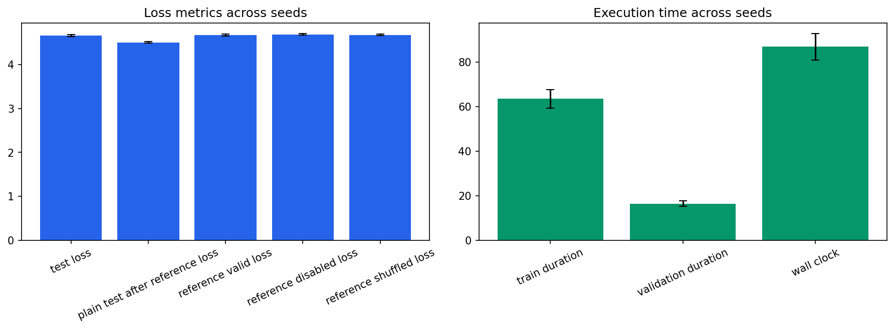

Seeds: [1, 7, 21, 42, 87]. Values are population mean +/- standard deviation.
| Test Loss | 4.66365 +/- 0.0207 |
|---|---|
| Test Perplexity | 106.045 +/- 2.18 |
| Plain Test After Reference Loss | 4.50342 +/- 0.0163 |
| Reference Valid Loss | 4.67205 +/- 0.0222 |
| Reference Disabled Loss | 4.68953 +/- 0.0202 |
| Reference Shuffled Loss | 4.67686 +/- 0.0194 |
| Train Duration Seconds | 63.4731 +/- 4.1 |
| Validation Duration Seconds | 16.4307 +/- 1.27 |
| Wall Clock Seconds | 86.8773 +/- 5.99 |
| Processed Tokens | 78610.8 +/- 78.4 |
